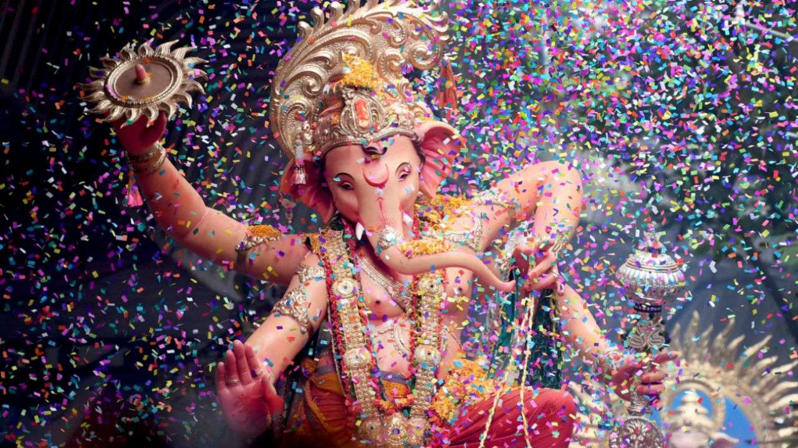
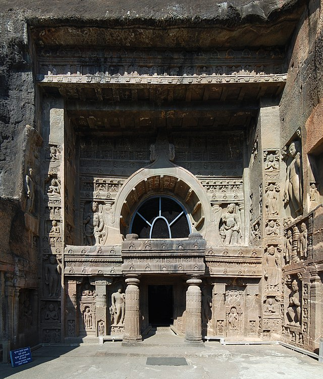
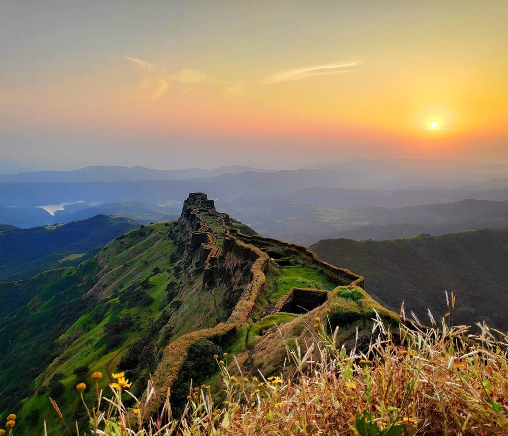
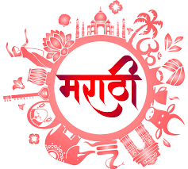
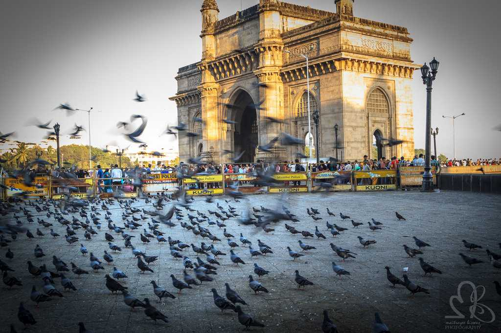
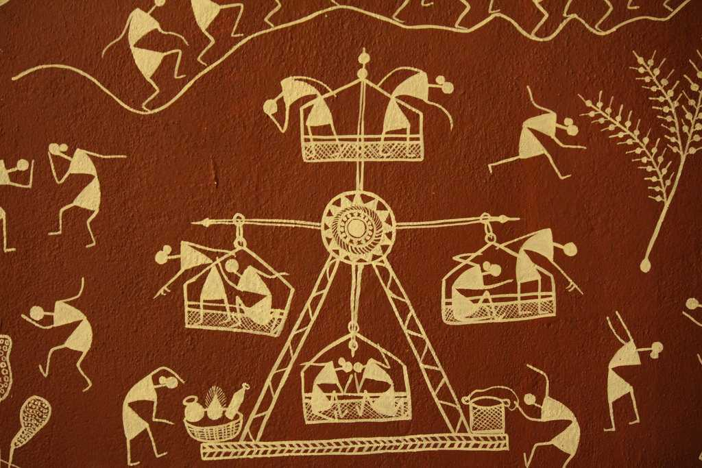

<div class="container-fluid">
    <div class="row">
        <div class="col-md-12">
          <div class="card bg-dark text-white">
            
            <div class="card-img-overlay">
            <h5 class="card-title-main">Know about Our Culture and Festivals!</h5>
            </div>
          </div>
          <div class="p1 mt-3">
            <p>

              Maharashtra is the third largest state of India. It has a long history of Marathi saints of Varakari religious movement, such as Dnyaneshwar, Namdev, Chokhamela, Eknath and Tukaram which forms the one of bases of the culture of Maharashtra or Marathi culture.
              [1] Maharashtra had huge influence over India under the 17th-century king Shivaji of the Maratha Empire and his concept of Hindavi Swarajya which translates to self-rule of people.
              The state of Maharashtra spans multiple cultures which includes cultures related to Hindus, Muslims, Buddhists, Sikhs, Christians, etc. Lord Ganesha, Maruti, Mahadeo in form of Shivlinga, Khandoba , Kalubai devi, and Lord Vitthal are some of the deities worshipped by Hindus of Maharashtra.
              Maharashtra is divided into various regions, such as Marathwada, Vidarbha, Khandesh, and Konkan. Each has its own cultural identity in the form of different dialects of Marathi language,[3] folk songs, food, and ethnicity.
              Diversity comes naturally in this third-largest state by area and second most populated state in India.
               Maharashtra can also be called the land of scholars, saints and actors as many of the people from Maharashtra have succeeded in the fields.
              Maharashtra is known for its purogami culture (forward culture). 
              'Maha' means big and 'Rashtra' means nation. 
              Maharashtra is indeed 'Maha' in its size, population and culture. 
              Maharashtra is famous for its unique customs and practices.<br><br>
              </p>
        </div>
        <div class="clearfix">
          
          <b class="bold">1.Attire</b>
          <p>The traditional attire of Maharashtra required the men to wear a dhoti (a long garment wrapped around the waist and legs), 
            kurta or a cotton shirt, pheta (headwear or topi) and waistcoat or bandi which was optional.
            Women wear choli or blouse on the top and a 9-yard long saree called 'lugade' or 'nauwari saadi'. 
            They usually wore open sandals or chappals as their footwear.
            In the 21st century, most of the people have started wearing western clothes or a fusion of Indian and western wear.
            The traditional attire is worn by very few but is worn by many during any religious event or Marathi festival.                    
          </p>
        </div>
        <div class="clearfix">
          
          <p>
            <b class="bold">2.Food</b><br>
            Marathi cuisine is the cuisine of the Marathi people from the Indian state of Maharashtra. It has distinctive attributes, while sharing much with other Indian cuisines. Traditionally, Maharashtrians have considered their food to be more austere than others.
Maharashtrian cuisine includes mild and spicy dishes. Peanuts and cashews are often served with vegetables. Meat was traditionally used sparsely or only by the well off until recently, because of economic conditions and culture.
Distinctly Maharashtrian dishes include pitla, bhakri, bharleli vangi, ukdiche modak, aluchi patal bhaji, thalipeeth, pav bhaji, ((transl|mr|Puran Poli||, ((transl|mr|shrikhand||, basundi, vada pav, nashik chi misal pav, and Mumbai chaat. Puneri missal, nagpuri, sambar vada, and selucha chanaare also considered to have originated from Maharashtra.[15]
The Konkan, Varadi, Agri and khandeshi cuisines are popular with tourists. The specialty dishes of Maharashtran cuisines are often strong in pepper and spice with a twist of curry leaves, coconut and peanuts; well-known dishes include vada pav, misal pav and Mumbai chaat and puneri missal, selucha chana.[15]
Typical breakfast items include misal, pohe, upma, sheera, sabudana khichadi and thalipeeth. In some households leftover rice from the previous night is fried with onions, turmeric and mustard seeds for breakfast, making phodnicha bhat. Typical Western breakfast items such as cereals, sliced bread and eggs, as well as South Indian items such as idli and dosa are also popular. 
Tea or coffee is served with breakfast.
          </p>
        </div>
        <div class="p1 mt-3">
          
          <p>
            <b class="bold">3.Architecture</b><br>
            Maharashtra state in India is known for its caves and rock cut architecture.
            It is said that the varieties found in Maharashtra are wider than the caves and rock-cut architecture found in the rock cut areas of Egypt, Assyria, Persia and Greece.[citation needed] The Buddhist monks first started these caves in the 2nd century BC, in search of serene and peaceful environment for meditation, and they found these caves on the hillsides.[2][1]
The Grishneshwar Temple was restored by Ahilyabai Holkar in the 18th century
Buddhist and Hindu cave temples at Ellora and the Ajanta Caves contain fine artistic design elements and India's oldest wall paintings can be seen here.
 Maharashtra's famous rock-cut caves have several distinct artistic elements though sculptures of the time are regarded to modern viewers as stiff and not dynamic. 
 The Buddhist caves, particularly the older ones, are either temples (Chaityas) or monasteries (Viharas)<br>
 
 <b>There are nearly 350 forts in Maharashtra, so it is said that forts are the glory of Maharashtra</b>.
  Most of these forts are associated with the great Maratha ruler, Chhatrapati Shivaji Maharaj. 
 It is believed that he developed as many as thirteen forts.
Vijaydurg fort is regarded to be the best sea fort developed by Shivaji. 
Every fort has temple inside that was a powerful inspiration to the Maratha fighters.
 510 km away from Mumbai is the famous Sindhudurg and Vijaydurg forts. This twin fort was constructed with the special guidelines from Shivaji.
 This fort is famous for its serene environmental beauty and its historic importance.
Shivner fort is the fort where Shivaji was born. 
This fort is nearly about 120 km from Pune. 
Pratapgad fort reminds the fiery battle fought between Shivaji and Afzal Khan.
 One must see the 300-year old fine architectural fort of <a href="murud">Murud</a> - <a href="janjira">Janjira fort</a>, <a href="kalsubai"> kalsubai-trekk</a> , <a href="rajmachi">Rajmachi</a> Lohagad and Visapur Forts,<a href="harishchandragad">Harishchandragad Fort</a>, Arnala Fort and Ajinkyatara Fort are ideal for trekking. 
Adventure lovers must visit these <a href="forts">forts...</a>
            </p>
      </div>
      <div class="clearfix">
        <p>
          <b class="bold"> 4. Languages</b><br>
          <br>
          The official language of Maharashtra is Marathi. While the majority do speak Marathi, others speak Hindi, Gujarati,
           English and other languages.
            Cities in Maharashtra are Metropolitan and are a blend of many cultures and use English as their official language.
             Most of the people in Maharashtra are multilingual and usually speak both Marathi and Hindi.<br>
          <b class="bold">5. Folk Dance and Music</b><br>
          The folk music and dances of Maharashtra are Koli, Powada, Banjara Holi dance and Lavani dance.
           Powada dance form shows achievements of Shivaji Maharaja, the Maratha ruler. 
           Koli music and dance originated from the fishermen community for entertainment.
            Lavani dance form showcases many topics like romance, politics, tragedy, society, etc. 
          'Lavani' comes from the "Lavanya" meaning 'beautiful' or 'beauty'.                  
        </p>
      </div>
      <div class="clearfix">
        <p>
          <b class="bold">6. Religion</b><br>
            There are around 80 per cent of Hindus and a significant amount of Muslims in Maharastra. 
            Christianity, Buddhism, Jainism, Sikhism and other religions are a minority.
            Churches, temples, mosques and other religious centres are found throughout Maharashtra. 
            The people of Maharashtra take pride in their cultural diversity and respect every religion.<br>
          <b class="bold">7. Occupation</b><br>
          Traditionally, the occupation of the majority of Maharashtra was agriculture.
           Folks near the coastal region were involved in fishing activities. But over the years,
           many places have been developed and industrialised, giving rise to various business and job opportunities to the people.
          <br>
          <b class="bold">8. Tourism</b><br>
          <br>
          With Gateway of India, Sea link, Siddhivinayak, Chhatrapati Shivaji Terminus and Marine drive in Mumbai, Sai Baba Temple in Shirdi,
           Mahalaxmi Temple in Kolhapur, Trimbakeshwar Shiva Temple in Nashik, Mahabaleshwar (hill station), 
           historical monuments in Aurangabad and many more places to visit, Maharashtra has indeed become a tourist destination. 
          The hotel industry in Maharashtra is vast and booming.<br>
          <b class="bold">9. Festivals</b><br><br>
          <br>
          Some festivals like Nag Panchami, Ganesh Chathurthi, Gokul Ashtami, Makar Sankranti, Gudi Padwa, Bhau Beej, 
          Ellora Festival Narali Pournima and Shivaji Jayanti have originated in Maharashtra. Nag Panchami is devoted to the Snake God. 
          The Snake God is prayed to get rid of the 'Nag Dosh'; Ganesh Chathurthi is an eleven-day long festival of Lord Ganesh. 
          The people of Maharashtra celebrate other festivals also like Diwali, Christmas, Eid, and New years.
           In most places, people celebrate all major festivals irrespective of their religion and honestly,
           that just shows the unity and brotherhood among them.<br>
          <b class="bold">10. Art and Craft</b><br>
          <br>
          The artisans of Maharashtra are very precise and delicate in their work. The weaving of quality fabrics,
           Mashroo and Himroo, made from cotton and silk (famous in Aurangabad) are finest of its kind.
          The Kolhapuri Chappal from Kolhapur is known for their simple style, durability, quality of the leather and its design. 
          Painthani Sarees that have been in production since past 2000 years are fine, 
          exquisite silk sarees with delicate zari handwork in their border.
           Warli Paintings done by the warli tribes, who live in the Thane district of the state, tell a tale to the viewers. 
           The paintings are of stick-figure forms and are easy to understand. 
          Kolhapur Saaj is a special type of necklace, famous among women of Maharashtra.
        </p>
      </div>
            </div>
        </div>
    </div>
              